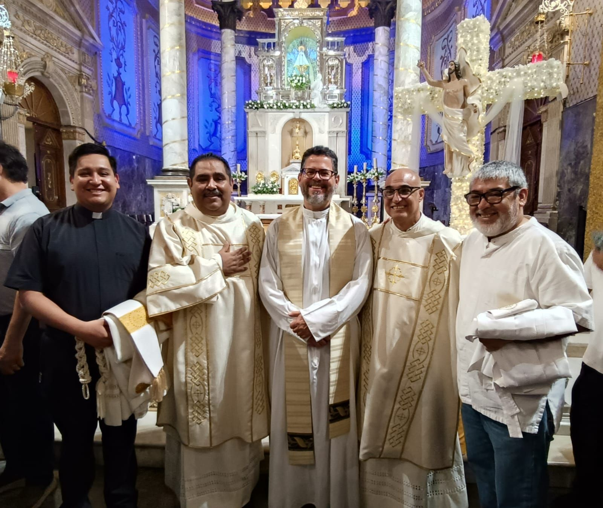

Publicado: 9 de Mayo del 2026

La comunidad de la Parroquia Espíritu Santo vivió un momento de gran alegría y bendición con la ordenación de dos nuevos diáconos permanentes, Humberto y Pedro, quienes después de varios años de formación, preparación espiritual y servicio pastoral, recibieron oficialmente el ministerio del diaconado.
La celebración se llevó a cabo el día 9 de mayo en la Parroquia de El Roble, donde cientos de fieles se reunieron para participar en la solemne Santa Misa presidida por el Señor Arzobispo.

Durante la ceremonia, los nuevos diáconos realizaron sus promesas de obediencia y servicio, comprometiéndose a continuar trabajando en favor de la evangelización y la caridad.
Ambos han servido durante años en distintas áreas pastorales.
La Parroquia Espíritu Santo agradece profundamente su testimonio de fe.